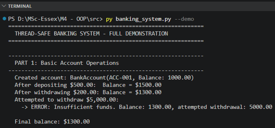
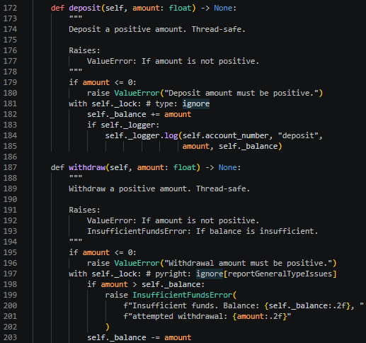
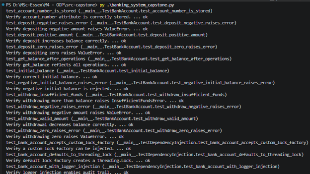
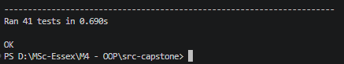
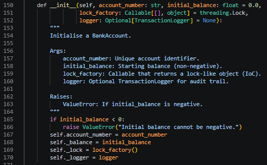
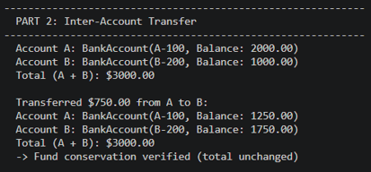
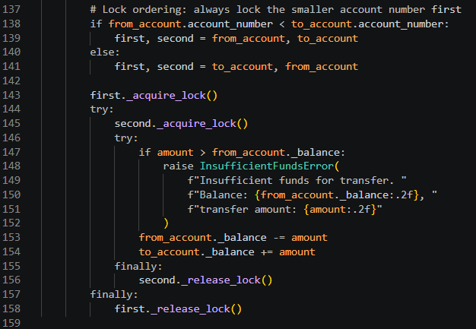
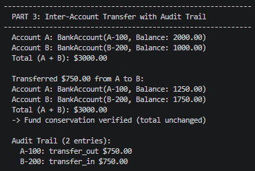
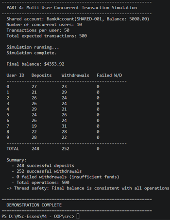
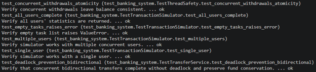

Task 1: Summarise Key Learning Outcomes
1.1 Understand and Implement Secure Coding Practices in Software Development
The capstone project extended the original thread-safe banking system with additional secure coding measures.
Input Validation
All public methods in BankAccount perform rigorous validation. The deposit and withdraw methods reject non-positive amounts, while the constructor rejects negative initial balances.

Exception Handling
The InsufficientFundsError custom exception enables graceful handling of business rule violations. The TransactionSimulator catches and records withdrawal failures without crashing.
Thread Safety
threading.Lock with context managers (with self._lock) ensures atomic operations on account balances.

Secure Data Handling
The capstone introduced SecureTransactionLogger, a persistence layer component that masks sensitive account numbers in audit logs. Only the last four characters are displayed, with full details accessible only via an authorised get_unmasked_logs() method. This demonstrates how secure coding extends beyond input validation to data protection at the output layer.
Testing and Validation
The expanded test suite of 41 unit tests validates correctness across basic operations, concurrent access, secure logging, and dependency injection. All tests pass successfully.


At the end when the unit test execution completes, all 41 tests pass with zero failures and zero errors, as indicated by the "OK" status and the summary line confirming "Ran 41 tests".
1.2 Apply Advanced Object-Oriented Principles to Solve Complex Software Problems
The capstone demonstrates several advanced OO principles:
Single Responsibility Principle (SRP)
Each class addresses one distinct concern:
| Component | Class | Responsibility |
|---|---|---|
| Custom exception | InsufficientFundsError |
Custom exception for insufficient balance scenarios |
| Account management | BankAccount |
Thread-safe management of account state and operations |
| Transfer logic | TransferService |
Inter-account fund transfers with deadlock prevention |
| Transaction behaviour | UserTransactionTask |
Defines transaction behaviour and statistics for one user |
| Thread coordination | TransactionSimulator |
Coordinates multi-threaded execution of user tasks |
| Persistence layer | TransactionLogger |
Records transactions for auditing and compliance |
| Secure persistence | SecureTransactionLogger |
Extends TransactionLogger with data masking |
Dependency Injection (IoC)
The capstone introduced Inversion of Control through BankAccount's lock_factory and logger parameters. Rather than hardcoding threading.Lock(), the class accepts a callable that returns a lock-like object. This enables injection of mock locks during testing and alternative synchronisation mechanisms without modifying the class.

Polymorphism
SecureTransactionLogger extends TransactionLogger and overrides get_logs() to mask sensitive data. Client code using the parent interface receives masked data automatically, while authorised code can call get_unmasked_logs() for full access. This demonstrates the Open/Closed Principle—the parent class is extended without modification.
Encapsulation
Internal state (_balance, _lock, _logs) is protected. Public methods provide controlled access, and get_logs() returns a copy to prevent external modification of internal state.

1.3 Utilise Design Patterns to Create Reusable, Maintainable, and Flexible Code
Lock Ordering Strategy (Canonical Ordering Pattern)
TransferService implements lock ordering by account number, eliminating circular wait conditions at their root.


Strategy Pattern
The separation of UserTransactionTask from TransactionSimulator follows the Strategy Pattern, enabling different transaction behaviours without modifying the threading infrastructure.
Template Method Pattern
TransactionSimulator.run() defines a template for concurrent execution: create threads, start them, join them, collect results. The transaction logic is deferred to UserTransactionTask.execute().

Decorator Pattern (Practical Application)
SecureTransactionLogger demonstrates the Decorator Pattern in practice. It wraps TransactionLogger and adds data masking functionality to get_logs() without modifying the parent class. This enables dynamic addition of security layers to the persistence tier.
Scalability and Extensibility
These patterns directly support scalability. The Strategy Pattern enables new behaviours without modifying the core engine. Lock ordering scales naturally with transaction volume. The Decorator Pattern, demonstrated through SecureTransactionLogger, shows how security layers can be added dynamically. The Visitor and Abstract Factory patterns, explored conceptually, offer further extensibility for analytics and multi-tenant deployments.
1.4 AI-Oriented OO Patterns (Conceptual Awareness)
Model Registry
Manages lifecycle and versioning of machine learning models. In banking, this could track versions of fraud detection or credit scoring models, ensuring correct deployment.
Feature Store
A centralised repository for feature definitions, enabling consistent feature engineering across training and inference pipelines. The TransactionLogger and get_statistics() infrastructure could feed such a store.
While not directly implemented, the conceptual exposure broadened understanding of how OO design extends into AI and data science domains.
1.5 Design Software Architectures Suitable for Large-Scale Systems
Layered Architecture
The capstone introduced a distinct persistence layer (TransactionLogger, SecureTransactionLogger) separate from the business layer (BankAccount, TransferService). This layered approach mirrors industry-standard architectures where each tier has well-defined responsibilities and can evolve independently.
Separation of Concerns
Account management, transfer coordination, user simulation, thread management, and data persistence are separated into distinct components, mirroring microservice patterns.
Deadlock-Free Design
Canonical lock ordering scales to any number of concurrent transfers without centralised coordination.
Deterministic Testing
The expanded test suite (41 tests) includes reproducible concurrent scenarios essential for CI/CD pipelines.

1.6 Develop Software Solutions Adaptable for AI Models and Efficient for Data Science Tasks
Clean Interfaces
BankAccount exposes deposit, withdraw, get_balance—well-defined access points for AI models analysing transaction patterns.
Extensible Design
UserTransactionTask allows AI-driven transaction strategies to be integrated without structural changes. The lock_factory DI pattern enables alternative concurrency models.
Data Collection Readiness
TransactionLogger records every transaction with account, operation type, amount, and balance. get_statistics() collects per-user metrics. Together, these form a data pipeline that could feed Feature Stores for ML training.